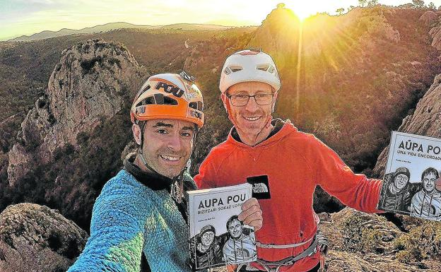

ZER DA ESKALADA?
ESKALADA ZER DA?
Eskalada, hankak eta eskuak edota baliabide artifizialak erabiliz, harkaitz, izotz-horma edo artifizialki prestatutako erliebe bertikaletatik igotzean datzan kirola, edo era horretara burututako igoera da. Tokioko 2021ko joko Olinpikoetan kirol eskalada gehitu zitzaion olinpiar programari, beste hiru kirol berrirekin batera (karatea, skateboardinga, eta surfa)..
MOTAK
ESKALATZAILERIK ONENAK
